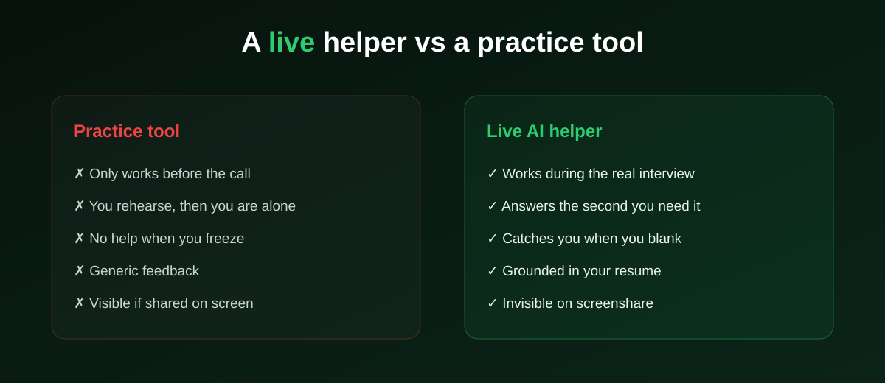

Most "AI interview" tools help you get ready, then leave you on your own the moment the call starts. A live interview AI helper is different: it stays with you during the interview, giving you real-time answers on your screen exactly when you need them. This guide explains what a live helper actually does, what separates the best live interview AI from a practice app, whether there is a genuinely free option, and how to try one safely before your next call.
A live interview AI helper listens to the interviewer, understands the question, and shows you an answer on screen in real time, hidden from screenshare. CloakAI is built for exactly this moment and offers a free 20-minute trial, so you can feel what real-time help is like before you pay.
Prep Tool vs Live Helper: The Distinction That Matters
The single biggest confusion in this category is treating preparation tools and live helpers as the same thing. They solve different problems at different times. A prep tool builds your confidence in the days before. A live helper is a safety net for the pressure of the actual conversation, when even well-prepared candidates blank, ramble, or lose the thread of a multi-part question.

Both are worth having. But if your interview is tomorrow and you can only add one thing, a live helper is the one that changes what happens in the room.
What the Best Live Interview AI Actually Does
Real-time, no typing
The helper listens to the interviewer through your system audio, detects when a question has been asked, and starts producing an answer immediately. You are never copy-pasting or switching windows. The best tools show the first words within a second or two of the interviewer finishing.
Invisible on screenshare
This is non-negotiable for a live tool. If the helper can be seen when you share your screen or the call is recorded, it is a liability, not a help. The best live interview AI is invisible at the operating-system level, so screen capture cannot see it at all.
Grounded in your resume
A generic answer invites a follow-up you cannot handle. A live helper that knows your projects and numbers gives you answers you can stand behind, which is what keeps the conversation moving in your favour.
Handles code and on-screen problems
Technical rounds put problems on your screen. The best live helper reads them directly and returns a worked solution, so coding rounds are covered by the same tool as behavioural questions.
Preparation gets you to the interview. A live helper gets you through the moments preparation cannot predict.
New here? Try every feature free for 20 minutes, no signup and no card needed.
Try CloakAI for free 20-minute free trial · No credit card required · Windows 10 & 11Is There a Free Live Interview AI Helper?
Genuinely free live help is rare, because running real-time speech and AI costs money on every session. Most "free" live tools cap you at a few minutes or hide the useful features behind a paywall. The honest version of free is a full-featured trial: CloakAI gives you 20 minutes of real, live use with everything unlocked, and the timer only runs while the app is active. That is enough to run a complete mock interview and judge the tool on real behaviour rather than a marketing video.
Live Interview AI Helper: What to Look For
| Capability | Why it matters | CloakAI |
|---|---|---|
| Works during the live call | The whole point of a live helper | ✓ |
| Invisible on screenshare | Safety if asked to share screen | ✓ OS-level |
| Real-time voice listening | No typing during the interview | ✓ |
| Resume personalisation | Answers you can defend | ✓ Deep |
| On-screen coding scan | Covers technical rounds | ✓ |
| Free trial with full features | Test before you pay | ✓ 20 min |
| India-friendly pricing | Affordable per interview | ✓ from ₹499 |
Not ready to buy? Test every one of those features free for 20 minutes first.
Try CloakAI for free 20-minute free trial · No credit card required · Windows 10 & 11How to Use a Live Helper Without It Being Obvious
- Position it near your camera. Reading an answer close to the lens keeps your eyes looking natural, not darting away.
- Use it as a prompt, not a script. Glance, absorb the key point, then say it in your own words. Reading verbatim sounds flat.
- Lower the opacity. A live helper you can see through lets you keep watching the interviewer while the answer sits behind your gaze.
- Practise once first. Use your free trial in a mock call so the tool feels familiar before it matters.
Final Verdict
A live interview AI helper is the one category of interview tool that actually changes what happens during the call, not just before it. The best one is real-time, invisible on screenshare, grounded in your resume, and able to handle code. CloakAI is purpose-built for that live moment, is genuinely free to try in full, and is priced for job seekers running real interviews. Test it once in a mock call and you will understand instantly why a live helper is different from everything else labelled "AI interview".
Line it up for your next interview and try the whole thing free for 20 minutes.
Try CloakAI for free 20-minute free trial · No credit card required · Windows 10 & 11